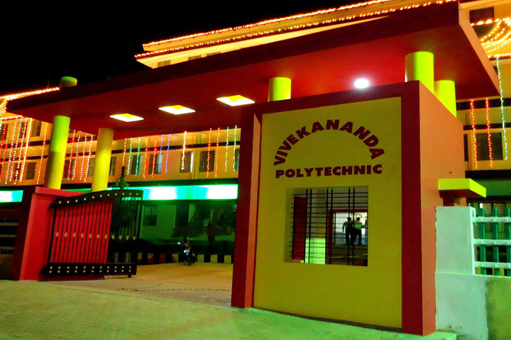

VIVEKANANDA POLYTECHNIC
Nehru Nagar,Puttur,D.K.-574203

ABOUT VPT
ACADEMICS
COMPUTER SCIENCE AND ENGINEERING
MECHANICAL ENGINEERING
CIVIL ENGINEERING
AUTOMOBILE ENGINEERING
ELECTRONICE AND COMMUNICATION ENGINEERING
ADMISSION
ADMISSION
REGULATIONS